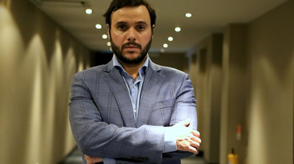

Real Chubut - Agencia de Noticias


"Las campañas se ganan con tecnología y en las urnas, no con likes"

En una entrevista con LPO, el CEO de Le Black Room analiza las claves de la comunicación política digital.
"No es lo mismo ganar una elección que gobernar, lo que cambia es el contenido", asegura el español Carlos Gutiérrez en una oficina . El CEO de Le Black Room es especialista en implementación de estrategias digitales. Trabajó para en la Jornada Mundial de la Juventud y en campañas electorales en España, México y Honduras.
En el marco del Congreso Iberoamericano de Comunicación Política de Bogotá, Gutiérrez accedió a una entrevista con LPO. Asegura que "se puede hackear el cerebro y la emoción de las personas a través de la comunicación digital" y agrega que, en definitiva, las redes sociales "se basan en el ego y en la gestión de la vanidad".
Te escuché hablar de redes sociales como ego, como una cuestión de vanidad. ¿Podés ampliar el concepto?
Es que las redes sociales se basan en el ego. Al final, cuando una persona publica un contenido sobre su vida es porque quiere conseguir cada vez más likes o evocar un tipo de persona que puede ser o no ser. De lo que estamos hablando cuando hablamos de redes es cómo manejar el ego de las personas y cómo tratas de incidir sobre ese ego. Si te das cuenta, las personas constantemente están publicando contenido y están buscando nuevas formas para ver cómo consiguen más likes por las fotos. Al final de lo que dependen las redes sociales es del ego, de la gestión de la vanidad.
¿Y cómo se traslada eso a un candidato o a un funcionario?
Cuando me refería al ego hablo en un plano más profundo del comportamiento de la sociedad relacionado con el comportamiento de las personas. Las redes sociales, lo que hacen es que haya una constante competencia de ego entre las personas.
Eso aplicado a la política hay que pensarlo desde dos aspectos. Uno: cómo manejar el ego del candidato. Esto es, de acuerdo a cómo sea el perfil habrá que hacerlo más cercano o más distante. Y dos: cuando hablamos hacia los ciudadanos, evidentemente existe un tema de ego en relación a cómo impacta o cómo comparten contenidos.
¿Existe una creencia entre los políticos que a mayor cantidad de likes, mayor cantidad de votos van a lograr?
Bueno, yo creo que eso es un error. En principio ellos quieren sentir que tienen más que el otro. Pero si hablamos de comunicación digital o de redes sociales, para lo que te ayudan es para movilización. Cómo conectan con el ciudadano, el trabajo de las redes es poner en contacto al político con el ciudadano y conseguir hacer horizontal esa relación entre ellos. Es lograr que mensajes complejos se entiendan de una forma mucho más sencilla.
Leía hace ya algunos meses en un artículo de la revista Crisis como Evo Morales seguía muy de cerca que su rival, Carlos Mesa, no tenga más seguidores que él en Twitter. ¿Eso es común?
Bueno, yo creo que hicieron mucho daño algunos estudios realizados con muy poco criterio y que llevan títulos como: "Éstos son los líderes del mundo que más seguidores tienen". Entonces ese es el problema: ¿Cuáles son las variables o los indicadores con los que están diciendo esa eso? ¿Tener mayor cantidad de seguidores significa que tenga una mejor conexión con el ciudadano? Eso no es verdad y eso queda demostrado en los estudios serios. Entonces no es un tema de cuántos seguidores tenga, sino cómo conversar con el ciudadano, si realmente escuchan a los ciudadanos o no.
En tu intervención en la Cumbre hacías una diferencia entre influencers y micro influencers. ¿Cuál es la diferencia?
Los influencers son las personas conocidas y famosas en internet y que tienen muchos seguidores. Son cada ve más las campañas y empresas se están fijando quienes son esos influencers y qué tanta comunidad real tienen, qué tanta interacción tienen, de dónde son. Porque si piensas en un influencer para una determinada campaña local tenés que estar seguro que la mitad de esos seguidores no sean de otros países.
Pero de lo que estamos hablando no es tanto de si los influencers funcionan o no. Vimos el caso de las últimas elecciones en Estados Unidos que pese a que Hillary Clinton tuvo muchísimos influencers, pues al final no permeó tanto el mensaje a la hora de la votación.
En definitiva lo que importan son los votos.
Las campañas se ganan en las urnas. Es importante, cuando hablo de micro influencers que entendamos que hoy las personas se fían más en personas cercanas sus barrios, a sus vidas, que de esas personas famosas inalcanzables. Entonces cuando alguien está compartiendo algo vinculado con tu barrio, con algo más cercano, está claro que eso va a tener un impacto fuerte.
Hay gente que todavía sigue pensando mucho en los influencers, sobre todo a la hora de manejar noticias. Pero otras personas se sienten más confiadas de los micro influencers que de los grandes, porque te permiten hacer pequeñas campañas locales que incidan de forma más directa en la zona en la que estas trabajando.
Otro concepto es el de Small Data como opuesto a Big Data. Lo llamás el ADN emocional, los pequeños detalles.
Es que no son opuestos. Big Data se refiere a un gran volumen de datos. Cuando hablamos de Small Data es de un ADN emocional, un concepto acuñado por Martin Lindstrom y de cómo eso te permite extraer mucho mejor la información, con más detalle.
Porque además cuando hacemos referencia a Big Data hablamos de un gran volumen de información pero también es muy importante cuales son los indicadores a medir para tomar decisiones. El Small Data es esa parte del ADN emocional que permite comprender mucho mejor a la sociedad.
Entiendo que la estrategia al momento de trabajar con candidatos es potenciar sus virtudes y ocultar sus diferencias. ¿Cómo trabajan eso en Le Black Room?
Cuando empiezas a trabajar con un candidato lo primero que haces es tener una conversación muy clara con él en varios aspectos. El primero, que es fundamental, es la confianza. Que sepa que la empresa como táctico digital esta trabajando con base a estudios, investigaciones, que hay una metodología detrás. Un político tiene que saber que cuando publica algo en las redes va a haber un porqué y un objetivo claro.
Segundo, no hace falta que el político nos cuente todo, pero nosotros preguntamos si nos tenemos que preparar para algo. No queremos saber los detalles, pero si con qué nos pueden pegar. Si podemos contar con información anticipadamente nos vamos a poder preparar para contrarrestar ese ataque.
No hace falta que el político nos cuente todo, pero nosotros preguntamos si nos tenemos que preparar para algo. No queremos saber los detalles, pero si con qué nos pueden pegar.
Veo dos canales diferenciados al momento de trabajar con una cuenta. Por un lado los mensajes del candidato, funcionario o área de gobierno. Pero por otro canal todo lo que se dice en las redes sobre ese candidato, funcionario o área de gobierno.
Al final tenemos que entender que la comunicación es bidireccional. Lo que las redes permitieron es una democratización en la conversación entre el político y ciudadano. Cuando trabajamos en la comunicación digital de un candidato creamos un documento de modelo de preguntas y respuestas. Solo cuando existen temas más sensibles entonces si habrá que ver cómo resolverlos. Pero en todos los casos, deben tener equipos que respondan absolutamente todo.
¿Pero es real la interacción entre candidatos o funcionarios y la ciudadanía? Veo que, al menos en Argentina, el intercambio es muy escaso.
Hubo un cambio en el algoritmo de Facebook, por ejemplo. Ese algoritmo te favorece cuando tenés muchos comentarios dentro de los comentarios, entonces si analizas los post que publican los candidatos en diferentes países de Latinoamérica ves que se generan debate dentro de los comentarios. Ahí el algoritmo genera alcance. Hoy no nos podemos quedar solo con que el candidato responda, sino que tiene que lograr generar conversación en sus post. Tiene que lograr que la propia ciudadania utilice ese canal para poder opinar, compartir y expresarse.
Un candidato tiene que lograr generar conversación en sus post. Tiene que lograr que la propia ciudadania utilice ese canal para poder opinar, compartir y expresarse.
Existen especialistas que hablan de la "electoralización de la comunicación gubernamental". Esta idea de que los candidatos son muy eficientes en las campañas pero al llegar al gobierno siguen comunicando con una idea de campaña.
Bueno, creo que hay un concepto que es muy antiguo que se llama campaña permanente. Ese concepto esta muy presente en la comunicación digital. Al final cuando estás en política siempre estas en campaña. La campaña de un político con la ciudadanía, este en gobierno o no, tiene que ser de una forma constante. Tiene que fomentar esa conversación, generar esa relación de confianza con las redes sociales para interactuar con el político. Entonces, es importante que sepan que están en campaña permanente, que son carreras de largo plazo.
Ahora, imagino que una cosa es comunicar en redes lo que uno proyecta para un gobierno como es el caso de una campaña y otra muy diferente es comunicar cuando se está gobernando.
No es lo mismo ganar una elección que gobernar, lo que cambia es el contenido, pero esa persona que era candidato ahora tiene que seguir comunicando. Tiene que seguir compartiendo su visión de lo que quieres hacer para la ciudadanía. Tienen que seguir conversando con ellos. Tiene que seguir trabajando en una relación de confianza con ellos.
Ya no es como al principio que representaba a un partido o una propuesta. Ahora esta representando a un país, una provincia o una ciudad. La comunicación tiene que ser diferente.
Y en ese sentido debe haber casos exitosos y casos que fracasan.
Te hablo en general, no del caso de Argentina. Como te decía no es lo mismo ganar una elección que gobernar, entonces el reto es saber gobernar bien.
¿Podemos hacer un paneo rápido de América Latina, desde México hasta Argentina para establecer qué diferencias existen respecto de las plataformas que usan? ¿Existen diferencias geográficas en el uso de Facebook, Twitter o Instagram?
No tengo datos concretos, pero las redes sociales en general que se están utilizando son Facebook, Twitter, Instagram, Youtube y WhatsApp. Yo creo que todas las campañas digitales deberían tener esas cinco herramientas y además es importante que tenga un web o una plataforma donde puedan concentrar toda la información.
¿Los candidatos o sectores de gobierno entienden que toman riesgos al abrir una red social?
Una de las cosas que hay que hacer cuando se empieza a trabajar con un candidato es explicarle a esa persona que estar en las redes sociales conlleva un riesgo. Pero lleva más riesgo no estar, porque si tiene un ataque o una crisis no puede encarar una defensa porque no tienes presencia.
Trabajar en las redes, mantener idas y vueltas con la ciudadania lo hará más fuerte al momento en que lleguen los ataques. Porque siempre van a recibir ataques, ya sea que estén en campaña o en el gobierno.
Trabajar en las redes, conectar con la ciudadania lo hará más fuerte al momento en que lleguen los ataques. Porque siempre van a recibir ataques, ya sea que estén en campaña o en el gobierno.
Cuando vas a publicar un contenido con un candidato o candidata lo primero que pensamos es por dónde nos van a golpear. Porque independientemente de lo que publiques alguien le va a golpear. Entonces hay que tener muy en claro los pros y los contra de cada posteo.
¿Cómo calificas los memes? ¿Cómo influyen en una campaña?
Yo creo que el humor social en las campañas existió siempre. Con lo que hoy nos encontramos es que las tecnología ayudaron en la velocidad en que se viralizan los contenidos. En una campaña digital existen estrategias de humor social, porque al final también hay que pensar en cómo llegamos a los ciudadanos que están rechazando tanto a la política como a los políticos.
¿Como conseguimos romper esa barrera de rechazo? Hay memes que son verdaderas obras de arte o mini guiones donde como trasfondo existe un trasfondo político importante. Peor al no hablar de política de una forma directa rompen ese rechazo del ciudadano. Quizás el ciudadano no comparta un contenido del candidato o ministro pero llegue a compartir un meme, que en el fondo está hablando, de manera indirecta, de los temas sobre los que se expresa el candidato.
Decías en la cumbre que una buena estrategia digital es hablar de política sin hablar de política. Y diste un ejemplo: el de una persona que publica una foto corriendo a las seis de la mañana por un parque transmitiendo, en definitiva, que allí no existe inseguridad pública.
Al final el reto es comprender que nos pueden hackear el cerebro y las emociones, y por lo tanto incidir en el comportamiento y eso conlleva evidentemente a la parte electoral.
Todos tenemos un amigo en Facebook que no sabemos quién es y lo que publique esa persona va a incidir sobre nosotros. El ejemplo de una persona que corre en el parque a la seis de la mañana nos puede transmitir que existe seguridad pública a esa hora. Lo mismo si publica una selfie en un nuevo restaurante, nos va generar una sensación de bonanza económica en la ciudad.
Pero también puede publicar contenido que incite al odio, al racismo, al rechazo, a la inseguridad. Eso esta golpeando de forma directa al yo interno de cada persona. Nadie quiere vivir en un lugar donde ve que los contenidos que se están publicando refieren a la inseguridad, de peligrosidad o de asaltos.
Esa persona o ese perfil que esta publicando ese tipo de contenido, de pronto está impactando en ese grupo. Si eso llega a las noticias el impacto se multiplica. Y a eso se le suma que por desgracia aparecen muchos medios falsos que viralizan información que no es tal.
¿Qué pasa con el juego sucio en las redes? Perfiles falsos, granjas, trolls ¿Cómo trabajan en Le Black Room la agresividad en las redes?
Cuando llegas a una campaña existe una guerra digital. Una de las cosas que tienes que hacer es estructurar diferentes equipos de voluntarios alrededor del país porque la campaña es de abajo hacia arriba, es de lo local a lo global. Lo que se busca es tener estructuras territoriales digitales de forma que ayuden a crear una malla que respalde la com digital del candidato. Lo que se busca es empoderar a esas personas locales para que ellos capaciten y empoderen a otras personas locales y se arme una estructura en la que estés preparando un ejército digital, sólido y comprometido con el proyecto que apoyen al candidato.
¿Una estrategia digital contempla traspasar a los medios tradicionales o se consideran medios obsoletos?
De ninguna manera, si nos quedamos en lo digital no estamos consiguiendo lo que verdaderamente queremos hacer. Nosotros queremos hacer tácticas que puedan impactar de una forma positiva en las personas.
Al final cuando estamos en una campaña lo que tratamos es de mantener en el celebro y en la emoción de las personas los positivos del candidato de forma constante. Con las acciones digitales lo que buscamos es algo innovador pero que puedan traspasar y que luego se hable de la campaña en los bares, en la calle. Si nos quedamos con lo digital no ganamos una elección. El objetivo es traspasar la frontera de lo digital a lo offline.
Tu empresa trabajó redes con los papas Benedicto XVI y Francisco. ¿Cómo fue esa experiencia?
Nosotros estuvimos colaborando en la Jornada Mundial de la Juventud, un evento que aglutina a unos 3 millones de jóvenes y dura varios días.
¿Qué características tuvo ese trabajo?
Cuando trabajamos en eventos de gran magnitud lo primero que buscamos tener en claro es cuál es la estructura y cuáles son los equipos con los que vamos a contar. Nosotros estábamos colaborando con equipos de más de 20 países y más de 10 idiomas. Al final se trata de cómo comunicar lo mismo en diferentes idiomas para que todo el mundo lo entienda.
Vivís en México, ¿cómo es el trabajo de redes en la política en ese país?
Lo que podemos sacar de las lecturas de las campañas en general es cómo van a utilizar toda es información, cómo van a aplicar la inteligencia digital y cómo van a construir modelos predictivos. Creo que en la última campaña de México hubo grandes avances de parte de la consultoría digital y en cómo se aplicó. Hubo muchos aciertos y errores, pero sin duda creo que en este caso por el contexto social no fue solo la campaña digital lo que dio los resultados.
Fuente: La Politica Online